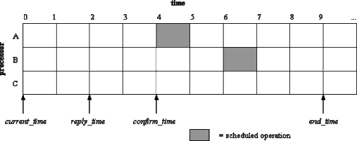
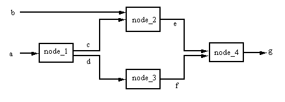
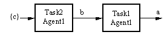
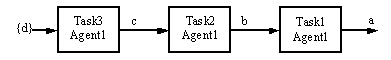
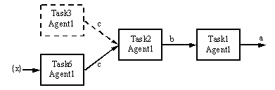
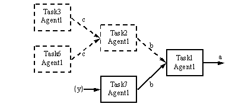
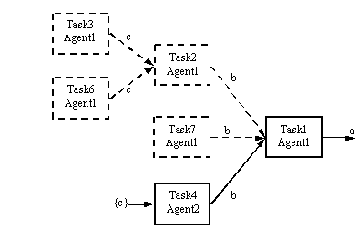
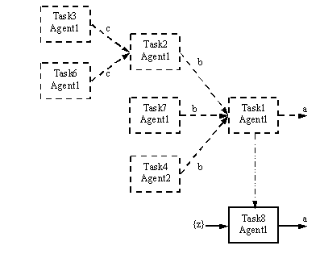
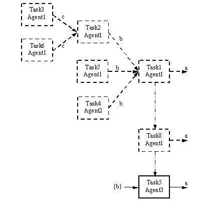

The Zeus Agent Building Toolkit |
Technical Manual |
| Contents | Introduction | Zeus Philosophy | Zeus Architecture | Communication | Coordination | Planning and Task Execution |
External Applications |
The role of the Planner/Scheduler is to construct action sequences that achieve desired input goals. The Planner is under the control of the Co-ordination Engine, which initiates planning and also manages the contracting of any subgoals that the agent cannot achieve.
Planning operators (actions or tasks) are represented in the classical fashion as primitive or summary operators. Primitive operators are defined in terms of their preconditions, effects, cost, duration and constraints and precondition order, while summary operators are defined in terms of an expansion or mini-plan (of existing primitive tasks).
For planning efficiency, the preconditions and effects of operators can be qualified, just as variables and methods can take modifiers in programming languages). Preconditions can be marked as:
Effect conditions can be marked as either public (the default) or private. The Planner will select an operator to produce a desired effect only if that effect is marked public. Hence side-effects should be marked as private to prevent the Planner from selecting the operator in order to produce such effects. A good example is "lying on the ground" is a side-effect of hitting someone, but if the intention is to merely to instruct someone to lie on the ground, hitting them is a far from ideal way of achieving it.
The Planner utilises classical partial order means end planning in its plan construction process. (For a review of the planning literature see [8]). Thus, given a goal of the form of Figure 6.1(a), the Planner searches its Plan Database for an operator with a public effect that unifies (with unification bindings q) with the desired_effect of the goal. If multiple operators are found, they are ranked by cost, and then by duration. Next, the Planner selects the first ranked operator, constrains its preconditions and effects with q, and then attempts to schedule the operator into its diary. If the operator cannot be scheduled, the Planner backtracks and repeats the process with the next applicable operator.
The Planner’s diary is a two-dimensional array, with time on one dimension and processors on another, as depicted in Figure 6.1(b). This approach (also used in job-shop scheduling), uses the principle that an agent will schedule its activities over a finite time period defined by the length of its diary, and across a finite number of processors, given by the width of the diary. In the ZEUS implementation, processors are independent task execution threads.
The scheduling of tasks into the plan diary is constrained by the end_time, the reply_time and the confirm_time of the goal. The end_time specifies the latest time by which the desired_effect should be achieved; while the reply_time specifies the latest time by which the agent planning the task must inform the agent requesting the task whether it can perform the goal. The confirm_time specifies the latest time by which the requesting agent will inform the performing agent whether it has been awarded the contract.
Thus, operator scheduling starts from the end_time and progresses towards the confirm_time, utilising any free processors. Furthermore, the entire planning process must be completed (or else aborted) by the reply_time. (The start_time is used in instances where a service agreement is being created. In such cases, one agent is requesting that another agent plan a task that will be executed n number of times at some future date, between some start_time and some end_time.)
|
Goal(
Reference: String Required_resources: Fact Desired_by: Agent Supplied_resources: Fact* Start_time: [Time] End_time: Time Reply_time: Time Confirm_time: Time Max_cost: [Cost] Max_invocations: Integer ) |
 |
Figure 6.1: (a) The goal data structure. (b) A plan diary.
If an operator is successfully scheduled into the plan diary, then the Planner will attempt to anchor all the preconditions of the operator, in the order mandated by the operator’s precondition ordering constraint. A precondition can be anchored in one of four ways:
(a) a resource in the Resource Database that unifies with the precondition can be reserved for it, or
(b) a matching unused effect (i.e. a side effect) of a previously scheduled operator can be reserved for it, or
(c) an operator that produces the required precondition can be scheduled into the diary, or
(d) an external agent can be found to produce the precondition. In the latter three cases, care must be taken to ensure that the required resource is produced before the operator needs it.
The anchoring process can be illustrated with an example; assume an operator P has preconditions a, b, c, and d, and their order constraint enforces the ordering [a] -> [b, c] -> [d]. Thus, firstly, the resource a is checked against the Resource Database. If a resource a* is found in the database that unifies with a (with bindings j), then a* is reserved for a. The reservation process takes into account whether or not the operator P will consume the resource, and if it does, when that is scheduled to happen. Thus, multiple read-only preconditions can reserve the same resource.
Once a reservation is made for the resource a, the other preconditions and the effects of the operator P are constrained with the bindings j, and the next set of preconditions in the sequence, b and c, checked against the Resource Database. Assume however that no resources matching b or c could be found in the database. Next, the Planner checks its diary for any scheduled operators that produce b* or c* as unused side effects, and which are scheduled to complete execution before the operator P is scheduled to start execution. Assume that a scheduled operator is found that produces b* within the required time window, but none for c*. Now, b* is unified with b, and the unification bindings used to constrain further the operator P. Also, the effect b* is reserved for b. To deal with the precondition c, the Planner searches its Plan Database for any operators that produce c* as one of their public effects. If some operators can be found, the planning process proceeds recursively as described above. If however, no applicable operators are available and the precondition c is not marked as local, then the planner creates a new subgoal to achieve c and adds the subgoal to a list of subgoals that must be achieved by other external agents. If in the sequence of preconditions [a] -> [b, c] -> [d], c must precede d, and c has to be achieved externally, then planning is suspended for d until c is successfully contracted out.
Thus, the planning process proceeds in the backward chaining manner described until one or more of the following conditions apply:
(i) the scheduler runs out of available processor space;
(ii) all the preconditions in the plan either (a) have been allocated resources from the Resource Database, or (b) have been allocated side effects of previously scheduled operators, or (c) external subgoals have been created for them, or (d) plan operators have been scheduled to produce their required conditions;
(iii) the planning process has been suspended until some external subgoals have been contracted out.
In any case, if a partial plan has been constructed, the planner will return to the Co-ordination Engine a list of subgoals that must be contracted out to other agents. Once the results of the contracting process are returned to the Planner, it utilises them to progress the planning process by backtracking on plan branches with subgoals that could not be contracted out, and elaborating suspended branches that depended on successfully placed external contracts. The planning process only successfully terminates when there are no unanchored preconditions in the plan.
The plan construction process with summary operators differs somewhat from the case with primitive operators. For example, consider that the summary operator of Figure 6.2 is selected for inclusion in a plan in order to produce the effect g. The Planner traverses the operator specification from right to left, following its precondition-effect links, and attempts to replace each node with a concrete (i.e. eventually primitive) operator. Thus, it starts with node_4, and searches its Plan Database for other summary or primitive operators that have preconditions and effects that are supersets of the node’s preconditions and effects, respectively.
Next, it ranks the applicable operators found and then selects the highest ranked one for inclusion in the plan; (the ranking criteria being by summary operators first, then by cost, and finally by duration). If the selected operator is a summary operator, then this planning process is repeated recursively on it. If, however, the selected operator is primitive, then the Planner attempts to schedule the operator into its plan diary.
Once all the nodes in a summary operator have been replaced by primitive operators (either directly or by recursively expanding other child summary operators), the Planner then attempts to enforce the effect-precondition links between the nodes on their concrete images in its diary. This serves to anchor some of the preconditions of the concrete primitive operators that form the expansion of the summary operator. For example, the effect-precondition link between node_2 and node_4 of Figure 6.2 anchors the precondition, e of node_4. Finally, the Planner attempts to anchor all remaining unanchored preconditions in the expansion; e.g. the precondition, b of node_2 or a of node_1.

Figure 6.2: An example summary operator.
The summary operator expansion mechanism described above is sufficient when a single agent is solely responsible for all operators in a plan. When multiple agents are involved, care has to be taken to ensure the correct routing of results that are produced by one agent but required by another. For example, if during expansion of a given node of a summary operator there are no operators in the Plan Database that have preconditions and effects that match those of the node, then the Planner has to create a subgoal to achieve the required effects of the node externally. For instance, if on expansion of node_4 of the summary operator of Figure 16 no operators can be found in the Plan Database that produce the effect, g, given inputs, e and f, then an external subgoal to produce, g, given e and f is created. Note that in the case of subgoals for primitive operators, the subgoal statement was simply of the form produce a, whereas for summary operator nodes, subgoal statements are now of the form produce a given b. Assume that the subgoal to produce g, given e and f, is successfully delegated to some agent A. Further, assume that on expansion of node_3, again no operator could be found that produces the required effect, f, given input, d. Again, assume the subgoal for this problem is successfully delegated to some other agent B. Now, the planner has to ensure that agent B has the required precondition, d, for its portion of the task, and further, that agent B sends its result, f, to agent A, so that agent A can perform its portion of the task.
The planner possess a mechanism to ensure the coherence of produced and supplied items when subgoals of the form produce a given b occur within multi-agent problem solving. Typical conflict situations take one of two forms. In the first case, consider that an agent A delegates to another agent B the task to produce x given y and z. Now, in creating a plan to produce x, agent B makes a reservation of the expected supplied item y. At this point in its planning process, agent B has not reserved the expected input item z, and it cannot say whether it may need it in the future. Further, as part of the plan to produce x, agent B needs to delegate to agent C a task to produce u, given v. But, the item z is still available and conceivably, agent C might need it whereas agent B might not. Thus, agent B delegates to agent C the task to produce u, given v and z. Now assume that in its plan to produce u, agent C reserves both v and z. This makes z unavailable to agent B, and agent B must be notified of this. Further, agent A must be notified to supply the input y to agent B and z to agent C (although agent A has no direct contract with agent C).
In conflicts of the second form, consider that an agent A delegates to another agent B the task to produce x given y and z. In creating a plan to produce x, agent B decides to delegate to agent C the task to produce u and to agent D the task to produce v. At this point in its planning process, agent B does not need the expected inputs y or z, and it cannot say whether it may need either of them in the future. So, because agents C or D might conceivably need y or z, agent B decides to delegate to agent C the task to produce u, given y and z, and to agent D the task to produce v, given the same y and z. A conflict emerges if both agents C and D reserve the same resource y, for example. It is the responsibility of agent B’s Planner to check the reservations made by both agents C and D to ensure there is no conflict. If a conflict is detected, only one of agents C or D is selected to perform its portion of the task, and the other portion delegated again with a revised list of supplied items.
Once a plan is constructed and scheduled for execution, each operator in the plan is executed in order at the operator’s scheduled execution time, or alternatively, before the scheduled execution time if there is a free processor available. Operator execution, which is controlled by the Execution Monitor component, involves an invocation of the domain function specified in the operator’s specification. The domain function, which is typically some legacy process, is invoked with the operator’s preconditions as its input arguments, and it is expected to return the declared effects of the operator. The relevant output of the domain function (i.e. the operator’s effects) are then passed as input to the appropriate downstream operators in the plan sequence.
An important role of the Execution Monitor is to detect failure during the scheduled execution of a plan. This can occur for a number of reasons:
(i) a resource reserved by an operator might be deleted,
(ii) an operator might begin execution but fail to complete because of insufficient scheduled time or some other reason,
(iii) an operator might successfully complete execution but return the wrong or incomplete results, or
(iv) some promised resource from another agent might not arrive on time (or alternatively, the other agent might notify our agent that it can no longer provide the promised resource). In either case, the net effect is that some precondition of an operator in the plan would lose its anchor.
In the case of the latter, if the Planner deems that it has sufficient time to replan before the whole plan goes out of schedule, then it initiates replanning. Replanning essentially takes advantage of the Planner’s normal planning and backtracking mechanisms. The Planner attempts to anchor the dangling precondition in one of four ways, either by:
(i) allocating a new resource to it – if one can be found, or
(ii) creating a new plan to produce the required resource, or
(iii) creating a sub-goal to produce the required resource and contracting out the subgoal, or
(iv) backtracking on the plan branch containing the dangling precondition.
In the latter three methods, the replanning process may involve the placement of new contracts with other agents. Furthermore, in the fourth method, some existing contracts might need to be cancelled if the new plan arrived at by backtracking no longer requires the results of those contracts. If all four approaches fail, in which case the Planner cannot devise any plan to achieve the desired goal, it will try to contract out the original root goal itself. If this also fails, the Planner is forced to report failure to the agent that originally requested the root goal. It is worth noting here that the whole process of replanning and the potential costs of placing new contracts and cancelling existing ones might end up being very unprofitable for the agent.[3]
Tables 6.1 and 6.2 present an example scenario illustrating some of the mechanisms involved in the exception handling process (although not included are situations where existing contracts need to be cancelled).
|
Agent1 |
Agent2 |
Agent3 |
|
|
Task Database |
{b}->Task1/10->{a} {c}->Task2/20->{b} {d}->Task3/30->{c} {x}->Task6/60->{c} {y}->Task7/70->{b} {z}->Task8/80->{a} |
{c}->Task4/40->{b} |
{b}->Task4/40->{a} |
|
Resource Database |
{c,d,x,y,z} |
{c} |
{b} |
|
Key |
{Preconditions}->TaskID/Cost->{effects} |
||
Table 6.1: Initial states of the agents involved in the exception handling scenario described in Table 6.2.
|
Action/Comments |
Results |
|
Achieve Agent1 a The agents’ planners use a best-first selection policy with no lookahead – thus given the goal to achieve a, the cheapest applicable task (Task1) is selected first. |
 |
|
Delete Agent1 c Deletion of the database resource, c, leads to a new operator (Task3) to anchor the precondition of Task2. |
 |
|
Delete Agent1 d Deletion of the resource, d, means Task3 loses its anchor. Hence, the planner backtracks, and tries an alternative mechanism for achoring the precondition, c, of Task2. |
 |
|
Delete Agent1 x Again, more backtracking. |
 |
|
Delete Agent1 y Deletion of the resource, y, leads to further backtracking and finally an external contract placed with Agent2. The best-first selection policy implies that once Task1 had been selected to achieve a, all possible means to anchor its preconditions will be tired, even if this involves an external contract. So, an external contract is placed to anchor the precondition, b, although the agent could have achieved the goal on its own if it used Task8 to achieve a. |
 |
|
Delete Agent2 c Deletion of the resource, c, in Agent2, leads to the exception cascading back to Agent1, which now tries a completely different means to achieve the goal, a. |
 |
|
Delete Agent1 z Agent1 has now completely exhausted all possible ways of achieving the goal, a. However, its commitment to the contract forces it to contract out the entire goal to Agent3. |
 |
Table 6.2: An exception handling scenario.
| Contents | Introduction | Zeus Philosophy | Zeus Architecture | Communication | Coordination | Planning and Task Execution |
External Applications |